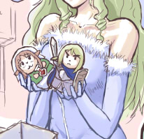

■2013-12-24 (火) シルバーセカンド15周年！▼
メリークリスマスイブ！
ということで1998年12月24日に始まったこのサイトも
今年でついに15周年！ 記念イラストをフォーユー！
クリックで全体表示

今年も片道勇者の年でした。海外進出が目玉なので
今回は英語タイトルの「One Way Heroics」で。
それにしても、振り返ってみると長い道のりを歩んできたものです。
15年という長い間には、楽しいことも大変なことも色々ありました。
ここまで続けられたという事実や今の状況を15年前の自分に伝えたら、
きっと当人も信じられないことでしょう。
また、ここまでの「道のり」を当時の自分に語っていたら、
さすがに同じ道をたどるのは無理だと返されるでしょう。
ここまでの道のりは、少しずつ皆さまのお声や手に支えられて、
奇跡的にたどることができた結果です。本当にありがとうございます。
そして私自身も、長い時間でだいぶ変わってしまいました。
もともとなかったような目標も年を取ってさらに薄らいできましたが、
逆に15年目を終えて叶った目標もいくつかあります。
一つは「現在の最後の目標は海外進出かな」と思っていたら、
思いがけない形で手を貸してくださる方々（PLAYISMの皆さま）に出会えて、
おかげさまでゲームの英語版リリースに至ることができたことです。
同時に「いつか海外の大きなコンテストに挑戦したい」という
非常に淡い願いも叶ってしまいました。本当に感謝の気持ちでいっぱいです。
もちろん、目標がなくなったから魂が抜けたようになる、なんてことはありません。
これまでも、今後も、ゲームを開発することに少しでも
たくさん全力の時間を費やしたいということは、私の変わらぬ願いです。
果たしてどこまで行けるか分かりませんが、とにかく
将来の自分が遊び直しても夢中で楽しめるゲームを作りたい。
願いはとてもシンプルです。
（これで生活できれば、もっと言うことなしですけれど）
それと同時に、皆さんに様々な面白さを伝えられるゲームを、
ジャンルを超えて一通り作りたいなとも思ってます。昔からたまに言ってますが、
「各ジャンルで自分にとっての最強ゲーを作る！」
は、今もサブ目標として胸の内に灯し続けています。
これからも地道にマイペースに、がんばっていきたいと思います。
今年も、たくさんの人に本当にお世話になりました。
サイトに来て下さる皆さま、コメントを寄せてくださる皆さま、
海外進出にお力を貸してくださった皆さま、お絵かきしてくださる皆さま、
家族のみんなや生活インフラを支えてくれる皆さまなどなど、
大勢の人にも支えられて、今の自分が成り立っています。
いま、これを読んでくださっている皆さま、
今年も本当にありがとうございました。
そしてよければ来年も、ときどき来てくださると幸いです。
年末までに用事も作業もやりたいこともたくさんあるので、
この更新が2013年最後の開発日誌になると思います。
次はまた、2014年の元旦にお会いしましょう。
それでは皆さま、よいお年を！
2013-12-24 (火)  カテゴリ: その他
カテゴリ: その他
 カテゴリ: その他
カテゴリ: その他